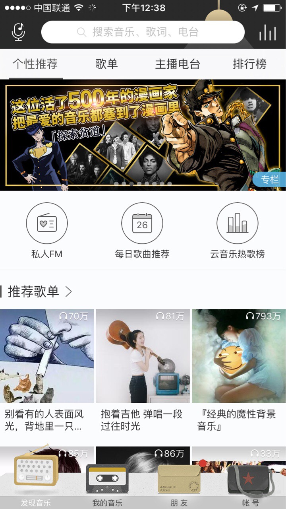
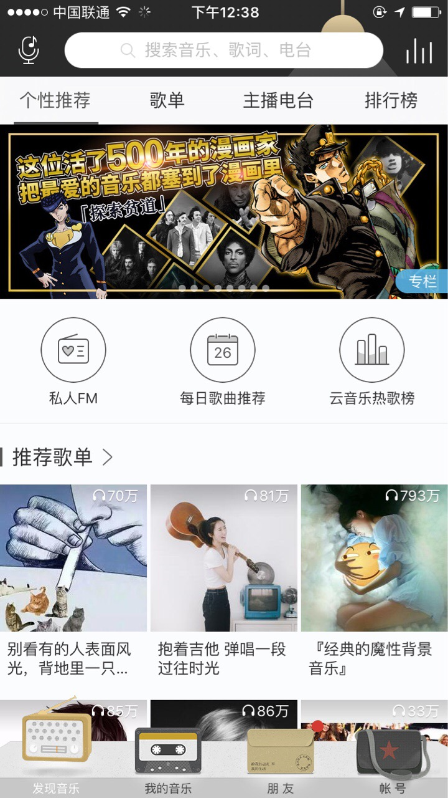

iOS 使用MVVM加TableView构建复杂列表界面
#什么时候需要这么干？
当一个业务型APP发展到一定程度的时候，首页一定是一个业务方施展拳脚的重要阵地，这就会导致首页会有很多业务模块，可能每个业务模块都很复杂，有自己的数据源，有自己的业务逻辑。有的模块可能只需要一个固定的展示区域，有的模块可能需要一个列表。就像这样～

#什么时候需要这么干？
当一个业务型APP发展到一定程度的时候，首页一定是一个业务方施展拳脚的重要阵地，这就会导致首页会有很多业务模块，可能每个业务模块都很复杂，有自己的数据源，有自己的业务逻辑。有的模块可能只需要一个固定的展示区域，有的模块可能需要一个列表。就像这样～
